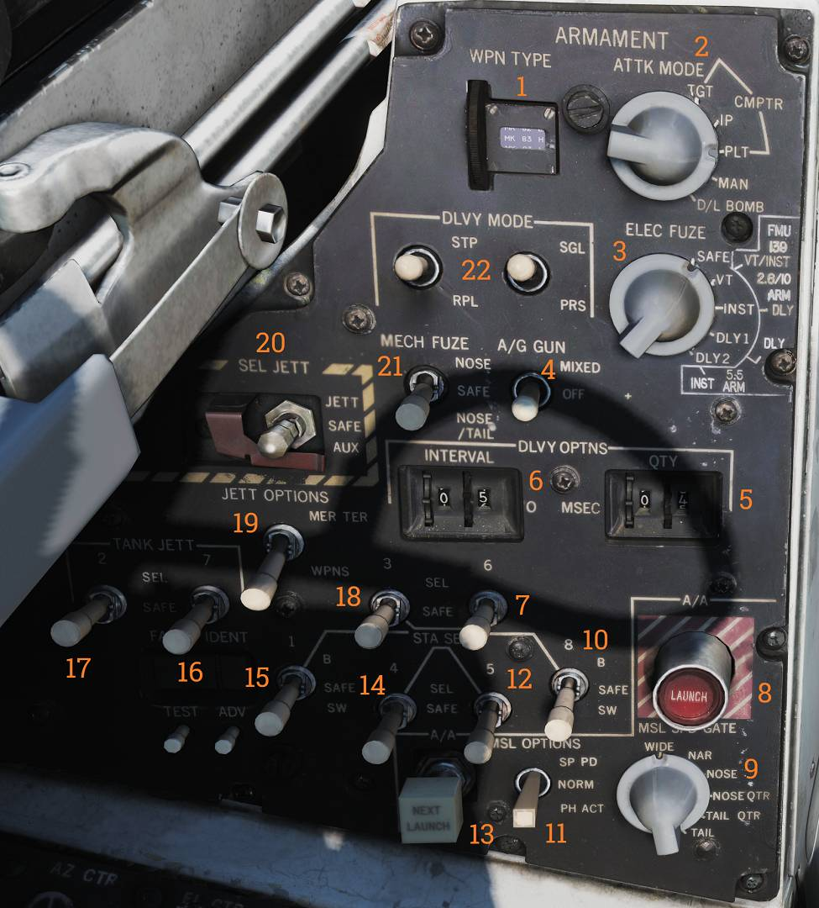

Left Vertical Console
Armament Panel

The armament panel provides primary control of air-to-air and air-to-ground weapon employment from the RIO cockpit.
Weapon Type Selector
The WPN TYPE selector (
Attack Mode Selector
The ATTK MODE knob (
Electrical Fuse Selector
The ELEC FUSE knob (
Air-to-Ground Gun Switch
The A/G GUN switch (
- OFF - Gun disabled.
- MIXED - Enables gun in addition to selected A/G ordnance.
Quantity Selectors
The QTY selector wheels (
Interval Selectors
The INTERVAL selector wheels (
Interval is set in milliseconds.
Station 6 Select Switch
The station 6 select switch (
Air-to-Air Launch Button
The A/A LAUNCH button (
Button illumination indicates hot-trigger conditions are met.
Missile Speed Gate Knob
The MSL SPD GATE knob (
Station 8 Select Switch
The station 8 select switch (
- B - Selects lower pylon.
- SW - Non-functional.
Missile Options Switch
The MSL OPTIONS switch (
- Enables AIM-7 pulse-doppler mode.
- Enables AIM-54 active launch mode.
Station 5 Select Switch
The station 5 select switch (
Next Launch Button
The NEXT LAUNCH button (
Station 4 Select Switch
The station 4 select switch (
Station 1 Select Switch
The station 1 select switch (
- B - Selects lower pylon.
- SW - Non-functional.
Tank Jettison Station 7 Switch
The TANK JETT station 7 switch (
Tank Jettison Station 2 Switch
The TANK JETT station 2 switch (
Station 3 Select Switch
The station 3 select switch (
Jettison Options Switch
The JETT OPTIONS switch (
- WPNS - Jettison weapons only.
- MER/TER - Jettison racks in addition to weapons.
This function is non-functional in the modeled F-14.
Selective Jettison Switch
The SEL JETT switch (
- JETT - Normal jettison mode.
- AUX - Backup jettison mode (guarded).
Mechanical Fuse Selector
The MECH FUSE switch (
Delivery Mode Selectors
The DLVY MODE switches (
- One switch selects single or paired weapon release.
- The other selects single-pass or multiple-pass delivery according to quantity and interval settings.